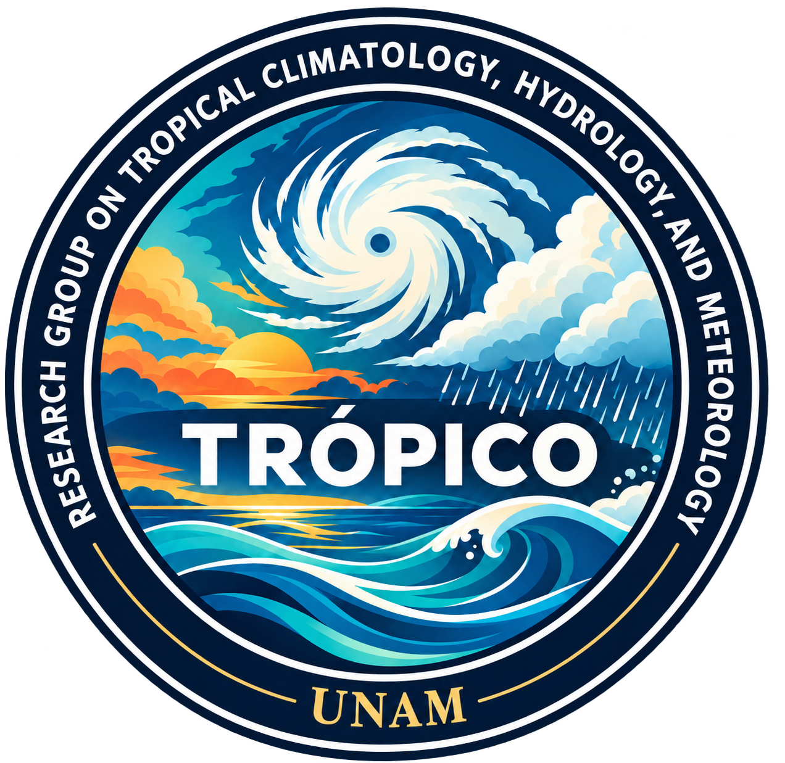

Tropical Atmospheric Dynamics
Atmospheric circulation, organized convection, and tropical waves.

TRÓPICOTROPICAL ATMOSPHERIC SCIENCE
Research Group on Tropical Climatology, Hydrology, and Meteorology
Explore Our ResearchWHO WE ARE
Understanding the physical processes shaping tropical weather, climate, and hydrology.
TRÓPICO is a research group dedicated to advancing our understanding of tropical atmospheric, climatic, and hydrological processes.
Our research explores the physical mechanisms governing tropical weather and climate, their variability across spatial and temporal scales, and their implications for extreme weather and hydrometeorological hazards.
We promote scientific research, academic collaboration, education, and the communication of tropical atmospheric and climate science.
WHAT WE STUDY
Our research connects atmospheric dynamics, climate variability, hydrology, and tropical weather processes.
Atmospheric circulation, organized convection, and tropical waves.
Climate variability, climate change, and tropical climate dynamics.
Precipitation, atmospheric moisture transport, and hydrological variability.
Tropical cyclones, mesoscale convective systems, and extreme weather.
Extreme precipitation, droughts, heat waves, lightning, and weather-related risks.
DISCOVER OUR SCIENTIFIC TOOLS
Scientific exploration does not stop at publications. Discover interactive tools developed by TRÓPICO researchers to visualize atmospheric conditions, tropical precipitation, and climate variability.
GLOBAL-SCALE EXPLORATION
See the atmosphere in a new way. Explore daily global atmospheric anomalies on an interactive 3D globe, with multiple variables and wind visualizations.
Explore the globeTROPICAL WEATHER & CLIMATE
Follow the pulse of the tropics. Explore satellite rainfall, sea surface temperature, convection indicators, and precipitation forecasts for the tropics and the Americas.
Open the observatoryLARGE-SCALE CLIMATE VARIABILITY
Explore ENSO, QBO, PDO, AMV, and IOD through monthly climate indices, historical records, and scientific visualizations of ocean–atmosphere variability.
Explore climate modesIllustrative graphics · Explore the platforms for the latest available scientific products and observation dates.
OUR COMMUNITY
Meet the researchers, students, and collaborators who make up TRÓPICO.


RESEARCH & STUDENT OPPORTUNITIES
Interested in a research project, thesis, or scientific collaboration?
We welcome inquiries from students and researchers interested in tropical atmospheric science, climatology, hydrology, and meteorology. Our principal investigators share several scientific interests, while also pursuing distinct research questions and approaches. Explore the group's research areas and reach out to the researcher whose interests best match yours.
When writing, please briefly introduce yourself and describe your research interests or thesis ideas. You are welcome to contact the researcher whose work resonates most with your goals.
FOLLOW TRÓPICO
Social Media
Connect with us and discover updates from our research community.